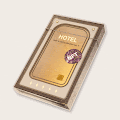 NOIL PLACE CARDS VOL1 【NOIL PLACE CARDS】让你通过卡片体验梦想的空间。 【NOIL PLACE CARDS】让您通过卡片体验梦想的空间。卡片是连接我们的框架、门和桥梁。 “我
Nomad Blvd | Collectibles Nomad NFT 以 Isabelle 著名的 Isabelle Gorilla 角色为基础，她于 2011 年首次绘制该角色。Nomad 代表未经审查的人类——我们在我们投射的图像之下。在由媒体构建的美貌和名人理想
Nomad Blvd | Mint Pass 2014 年 12 月 14 日星期二 创始人离职 欢迎来到 Nomad Blvd — 一片神奇的土地，在这里庆祝艺术，画布不断发展，狂野自由奔跑。 2014 年 12 月 12 日星期二，我们将开放 Founder Mint Pass 销
OneLine by AndyPark AndyPark AKA 100/100 限量版。MetaGhostz 创作者、著名船员、定制艺术家 OneLine Rode 地图： 更多活动将很快添加 1、上线收藏 首购特惠 1~10 铸币价格 15 Klaytn 11~20 铸币价格 20 klaytn 21~40
Original Art by Alexandria Pooré 我的原创作品的数字捕捉。主要是布面油画。我也做混合媒体和雕塑。作为一名艺术家，我受到街头艺术和涂鸦的启发，并被超现实主义人物和明亮的调色板所
Smoower BROKEN Armory 由于合同问题，此收藏已损坏….请使用 Smoower Armory 是直接作为游戏一部分的各种合同中的第一个。 军械库允许您购买各种机甲和机器人。 Smoower Armory 是直接
SwapMatic SwapMatic 是 100% 去中心化的服务。 任何人 - 可以创建交易所 - 添加或删除流动性 - 获得 0.3% 的池奖励 - 利用现有的流动性池 - 围绕核心工厂合约开发总能从市场中找到最优
The ABSTRACT Store 经过 杰夫戴维斯 为获得 $ABST 的收藏家准备的特别礼物。 ABSTRACT Store NFT 在过去 7 天内售出 1 次。 The ABSTRACT Store 的总销售额为 59.09 美元。 一个 The ABSTRACT Store NFT 的平均价格为 59.1 美元。 The ABSTRACT Store 拥
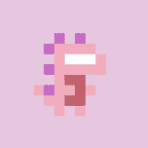 tiny dinos (eth) Tiny Dinos（仅限 ETH） 10,000 个 CC0（Creative Commons）全链 NFT 在 7 条不同的链上铸造并可在每条链之间转移。该项目的收藏品是免费铸
TLOS Pick2 Lottery TLOS Pick2 Lottery 是 EOS 区块链上的赌博游戏。您需要 1 个 TLOS 才能参与。每个人都获得 1 LOTTO 代币。选择一个数字并测试你的运气。所有的利润将在获胜者之间分享。 Telos (EOSIO) 区块
To The Moon 什么是去月球？ To the Moon 是一款基于 EOS 的城市建设手机游戏，沿用了 SimCity Buildit、Township 和 Rollercoaster Tycoon 等传奇大亨游戏的基本特征。 除了城市建设游戏
Toasted AVAX Toasted AVAX 是 Token Miner 元数据的有趣旋转。 它是一个简单的智能合约，充当 AVAX 奖励池，只要合约中仍有 AVAX 锁定，每天都会返回池中 5%* 的 AVAX！ 用户可以选择吃他们的吐
ToCandy 什么是ToCandy？ ToCandy 是一个用于 tron 代币分发的 dapp。 ToCandy 每天分发糖果代币。 用户可以在收到糖果后直接参与dapp游戏或交易。 ToCandy 致力于推动 tron dapp
TOFFEE SAFEFARM 什么是太妃糖安全农场？ TOFFEE SAFEFARM 是 BSC 上第一个用于再膨胀代币的 YIELD FARMING……它是一个促进复合自动化和单产农业的平台。 TOFFEE 使用各种策略来帮助用户通
tofuNFT 什么是豆腐NFT？ NFT 市场专注于 GameFi 和收藏品。 tofuNFT 是一个功能齐全的去中心化市场，用于购买、销售和交易 NFT，由 SCV.Finance 创建并部署在多个区块链上。 TofuNFT — 第一
TofuSwap TofuDefi 是一种无需许可的去中心化 DeFi 解决方案，它将结合多个独立的 DeFi 协议。 第一个是 TofuSwap。 TofuSwap 是一种用于在 TRON 网络上自动进行代币交换的协议。 TofuSwap 基
Tokel Platform 什么是通证平台？ Tokel all-in-one Superlite 应用程序使用新的 nSPV 技术，并将具有硬币钱包、代币钱包、代币浏览器、tokenDEX、NFT 市场和简单易用的代币创建工具。
Token Bulksender 什么是 Token Bulksender？ 这是一个 dApp，用于通过少量交易将以太币和 ERC-20 代币批量发送到多个地址，这将为您节省更多时间和 tx 费用 Bulksender 现在生活在
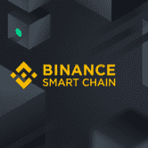 Token Create BEP20 什么是 Token Create BEP20？ BEP20 代币生成器 无需编码即可创建您自己的 BEP20 智能合约。 BEP20 生成器是在币安智能链网络上创建自己的 BEP20 代币的最简单、最快捷的方式。 不
Token Create BEP20 什么是 Token Create BEP20？ 一键创建您的 bep20 令牌，无需登录 它有效地在 dapp 和 metamask 之间创建了防火墙！ NFT、DEFI用户使用可以有效防止钓鱼、诈骗等网站保护
Token ERC20 Generate 什么是 ERC20 代币生成？ 您无需登录即可一键创建您的erc20代币。您可以自定义名称、符号、总金额等 无需编码即可创建您自己的 BEP20 智能合约。 BEP20 生成器是在
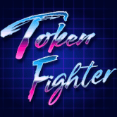 Token Fighter 什么是令牌战斗机？ Token Fighter 是一款多人 NFT（Non-Fungible Token）收藏游戏，它结合了 DeFi 质押机制，以使代币持有者进一步参与维持 Token Fighter 代
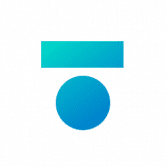 token.store EOS token.store EOS 是第一个完全无需信任的基于 EOS 代币的去中心化交易所。 token.store EOS 提供完全链上交易体验，所有交易都由经过审计的智能合约促进，从而消除了其他 EOS “DEX
token.store ETH 什么是 token.store ETH？ token.store ETH 自 2017 年开始运营，是以太坊网络上最古老、完全无需信任的去中心化交易所之一。 所有资金都保存在一个开放的智能合约上（而不是由交
TokenField 什么是 TokenField？ TokenField：赚取加密货币的最聪明方法 TokenField Token，以下简称 TF，是一种符合 ERC-20 标准的智能合约，专为部署在
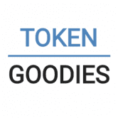 TokenGoodies Exchange 什么是 TokenGoodies 交易所？ 推出首个此类交易所，用户可以在其中交易（购买/出售）能源。 买家将能够以低于销毁 TRX 的成本购买能源，卖家将收到 TRX 支付，以换取将其
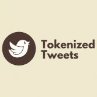 Tokenized Tweets 什么是标记化推文？ 只需在 Twitter 上回复特定推文，同时标记@tokenizedtweets，Matic Network 就会生成一个包含推文内容的 NFT。 有一个内置
TokenJenny TokenJenny 最初是一个基于 Harmony 的免费代币生成器工具，使任何人都可以在链上创建 HRC-20 代币。 现在，TokenJenny 为链提供了许多独特的功能，例如 Gem Mines
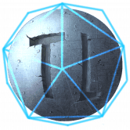 TokenLands TokenLands 是一个结合 WAX 区块链和网络游戏的新世界殖民经济 P2E 模拟器。基于游戏的游戏使用独特的 NFT 卡集合，包括基础设施、土地、头像、头像升级、资源和以战争为
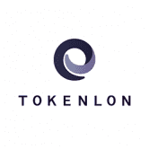 Tokenlon 打开 imToken 或 Tokenlon.im 并点击“市场”在 Tokenlon DEX 上交易。 Tokenlon 是一个去中心化的交易所，具有链下限价单和基于 0x 的链上结算以及来自 Uniswap 和 Curve 等其他 DEX 的聚合量。 其模块化设计
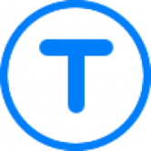 TokenMaker TokenMaker 是基于智能合约在以太坊网络上创建您自己的 ERC-20 或 ERC-223 代币的最简单、最快捷的方式。 无需编程技能 获得生成代币的 100% 所有权 自定义代币名称、符号和初始供应
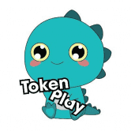 Tokenplay TokenPLay 是基于币安智能链和多链的 NFT 和游戏平台开发。 我们的愿景是成为区块链行业最大游戏的中心。 对我们来说，TokenPlay 不仅仅是一个游戏和 NFT 项目
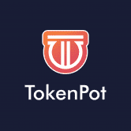 TokenPot TokenPot 是一个营销平台和启动板，让投资者可以访问经过严格审查的项目。 第一阶段 involes 列出新项目的网站 它使投资者能够以安全、可信和去中心化的方式访问经过严
Tokenreward 固定抵押年利率 383,025.80% TokenReward.io 提供去中心化金融资产，通过使用其独特的 SAP 协议，以循环可持续的固定复利模型奖励用户。 TokenReward.io 提供业界最高的固定 APY，每 15 分钟支付
Tokensender 什么是代币发送者？ Tokensender 提供了为用户进行批处理的机会。 只需支付一个 交易，用户可以同时发送到150个地址。 因此，用户可以一次支付 而不是支付 150 倍的费
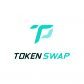 TokenSwap 什么是代币交换？ TokenSwap 是一个去中心化的代币拍卖平台。 我们希望解决 Token 资产预售过程中的一系列问题，如拍卖不公开、手续费过高、中心化平台干扰、Toke